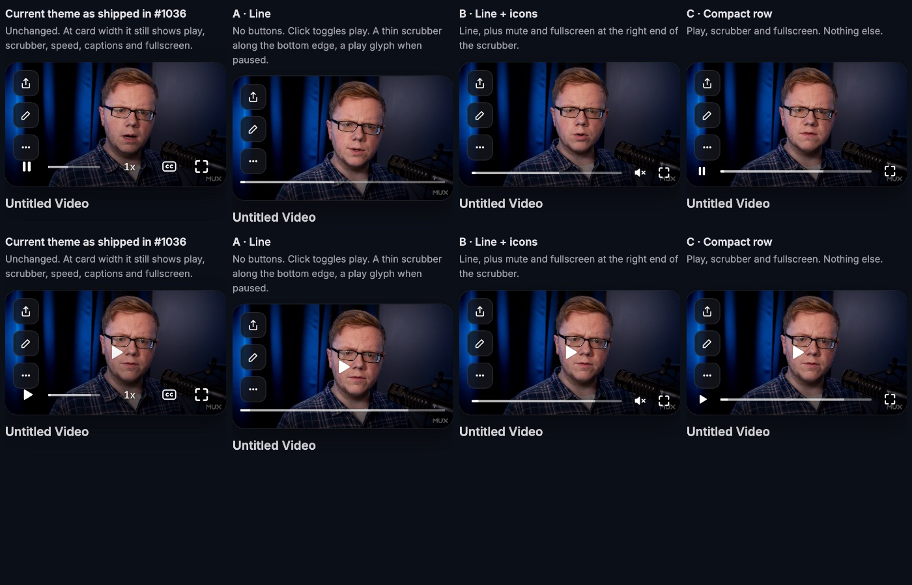

Three simpler versions of the #1036 theme for small surfaces like the library card, each inside a mock card with its share, edit and more buttons. These are live players: hover, click, scrub. Screenshots of playing and paused states are at the bottom. Throwaway prototype, Mux demo video.
